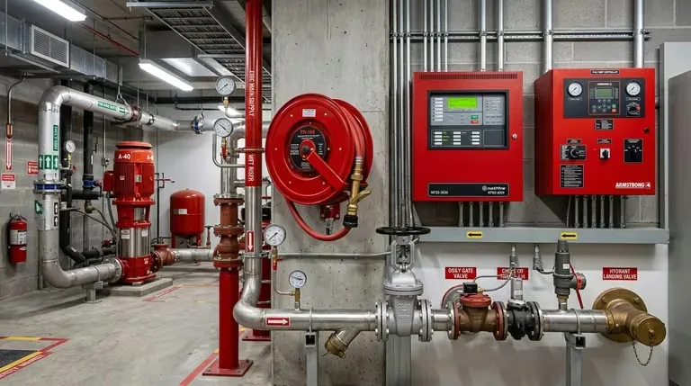

<section class="ol-art-section">
<h2>Ochenta años de servicios de protección contra incendios en Ciudad de México</h2>
<p>
Hay empresas que sobreviven décadas en el mercado mexicano no por falta de competencia, sino porque han acumulado una reputación técnica que sus clientes no arriesgan cambiar. MANEXT es una de ellas. Con más de 80 años de operación continua en Ciudad de México, esta empresa de servicios técnicos especializados en extintores contra incendio ha acompañado el crecimiento industrial y urbano de la capital a través de presidencias, crisis económicas, sismos y pandemias, sin interrumpir su operación.
</p>
<p>
Lo que MANEXT hace es técnicamente específico y normativamente crítico: recarga de extintores con agentes certificados, mantenimiento preventivo y correctivo bajo NOM-154-SCFI y NOM-002-STPS, prueba hidrostática de cilindros y distribución de extintores certificados. En un mercado donde proliferan talleres sin respaldo normativo, MANEXT representa la opción de mayor trayectoria verificable en la Ciudad de México.
</p>
<div class="ol-art-callout" style="border-color: var(--blog-accent);">
<strong>Más de 80 años de operación continua</strong>
<p>Fundada en la década de 1940, MANEXT ha operado ininterrumpidamente en Ciudad de México, acumulando una base de clientes corporativos e industriales que confían en su servicio para el cumplimiento normativo ante protección civil y aseguradoras.</p>
</div>
</section>
<section class="ol-art-section">
<h2>Historia: cómo MANEXT creció junto con la Ciudad de México</h2>
<p>
Para entender la relevancia de MANEXT, conviene contextualizar su historia en el desarrollo urbano e industrial de la CDMX. La empresa nació en una época en que la regulación de extintores en México era prácticamente inexistente y el mercado estaba dominado por productos de importación de baja calidad y servicios de mantenimiento informales.
</p>
<div class="ol-timeline">
<div class="ol-timeline-item">
<div class="ol-timeline-year">Década de 1940</div>
<div class="ol-timeline-text">Fundación de MANEXT en Ciudad de México. El foco inicial es el mantenimiento y recarga de extintores para la industria manufacturera que se desarrolla en el norte de la ciudad —Vallejo, Azcapotzalco— impulsada por el modelo de sustitución de importaciones.</div>
</div>
<div class="ol-timeline-item">
<div class="ol-timeline-year">Décadas de 1960–1980</div>
<div class="ol-timeline-text">Expansión junto con el crecimiento industrial de la CDMX. El boom de la construcción de edificios corporativos en Paseo de la Reforma y el desarrollo de Tlatelolco genera demanda de servicios de mantenimiento masivo de extintores. MANEXT consolida su posición como proveedor de referencia para constructoras y administradoras de edificios.</div>
</div>
<div class="ol-timeline-item">
<div class="ol-timeline-year">Décadas de 1980–2000</div>
<div class="ol-timeline-text">La publicación de las primeras NOM en materia de extintores y seguridad industrial establece un marco normativo que MANEXT incorpora a su operación desde el inicio. La empresa es de las primeras en obtener la certificación de sus procesos bajo la nueva regulación, diferenciándose de talleres informales que proliferan en el mercado.</div>
</div>
<div class="ol-timeline-item">
<div class="ol-timeline-year">2000–2020</div>
<div class="ol-timeline-text">Consolidación de la NOM-154-SCFI y NOM-002-STPS como estándares obligatorios. MANEXT invierte en equipamiento de prueba hidrostática certificado y en la capacitación de su equipo técnico bajo los nuevos parámetros. Ampliación de la cartera de agentes extintores para cubrir clases D y K además de los tradicionales polvo y CO₂.</div>
</div>
<div class="ol-timeline-item">
<div class="ol-timeline-year">2020–presente</div>
<div class="ol-timeline-text">Digitalización del expediente de mantenimiento por cliente. MANEXT implementa un sistema de seguimiento que permite a los clientes acceder a sus registros históricos de mantenimiento, facilitando la presentación de expedientes ante autoridades de protección civil y aseguradoras.</div>
</div>
</div>
</section>
<section class="ol-art-section">
<h2>El marco normativo en que opera MANEXT</h2>
<p>
La operación de MANEXT está definida por dos normas oficiales mexicanas que regulan aspectos distintos pero complementarios de la protección contra incendios en México:
</p>
<div style="margin: 1rem 0 1.5rem;">
<span class="ol-art-norm-badge">NOM-154-SCFI-2005</span>
<span class="ol-art-norm-badge">NOM-002-STPS-2010</span>
<span class="ol-art-norm-badge">NFPA 10</span>
<span class="ol-art-norm-badge">NFPA 25</span>
</div>
<h3>NOM-154-SCFI-2005 — Extintores contra incendio</h3>
<p>
Esta norma regula los extintores portátiles: especificaciones de fabricación, agentes extintores permitidos, requisitos de etiquetado, procedimientos de recarga y mantenimiento, y periodicidad de la prueba hidrostática. Para MANEXT, es la norma que rige el 80% de su operación de servicios.
</p>
<p>
Los puntos más relevantes para el servicio de recarga que define NOM-154:
</p>
<ul>
<li>La recarga debe realizarse con el agente extintor especificado en la etiqueta del extintor — no se puede cambiar el agente sin modificar la etiqueta y el certificado.</li>
<li>Después de cada recarga, el extintor debe sellarse con un sello de seguridad que incluya la fecha de mantenimiento y el nombre o número de la empresa que realizó el servicio.</li>
<li>La empresa que realiza la recarga debe contar con los medios técnicos apropiados para el tipo de extintor (básculas calibradas para CO₂, equipos de carga de polvo sellados, etc.).</li>
<li>La prueba hidrostática es obligatoria a los intervalos definidos por la norma, y el cilindro debe ser retirado del servicio si no pasa la prueba.</li>
</ul>
<h3>NOM-002-STPS-2010 — Condiciones de seguridad en centros de trabajo</h3>
<p>
Esta norma aplica a los empleadores y establece las condiciones bajo las cuales deben seleccionarse, instalarse y mantenerse los equipos contra incendios en los centros de trabajo. Para los clientes de MANEXT, NOM-002-STPS es la que define:
</p>
<ul>
<li>La densidad de extintores por área según el nivel de riesgo (bajo, ordinario, alto).</li>
<li>La distancia máxima de traslado a un extintor (no más de 23 m en riesgo bajo para clase A).</li>
<li>Las alturas de montaje (entre 1.0 m y 1.5 m del piso al asa del extintor).</li>
<li>Los requerimientos de señalización del extintor.</li>
<li>La obligación de documentar las inspecciones periódicas.</li>
</ul>
<p>
La combinación de NOM-154 (que regula el equipo) y NOM-002-STPS (que regula la instalación y el mantenimiento en el centro de trabajo) crea el marco completo que MANEXT ayuda a sus clientes a cumplir.
</p>
</section>
<section class="ol-art-section">
<figure class="ol-art-featured inline">
<picture>
<source srcset="../../img/equipos-contra-incendios/bomberos-entrenamiento-rescate-01.avif" type="image/avif">
<img src="../../img/equipos-contra-incendios/bomberos-entrenamiento-rescate-01.webp" alt="Entrenamiento de brigada contra incendios con equipo de protección profesional" loading="lazy" decoding="async" width="768" height="429">
</picture>
<figcaption class="ol-art-featured-caption">Entrenamiento de brigada contra incendios con equipo profesional.</figcaption>
</figure>
<h2>Servicios de MANEXT: el ciclo completo del extintor</h2>
<p>
MANEXT opera bajo el concepto de ciclo completo: desde la venta del extintor nuevo hasta su retiro definitivo del servicio cuando el cilindro ya no pasa la prueba hidrostática, la empresa acompaña al cliente en cada etapa de la vida útil del equipo.
</p>
<h3>1. Venta de extintores certificados</h3>
<p>
Para clientes que están equipando instalaciones nuevas o reponiendo extintores obsoletos, MANEXT distribuye extintores de polvo ABC, CO₂, agua, espuma, agente limpio, clase D y clase K, todos con certificación NOM-154 vigente. La ventaja de adquirir el extintor directamente con MANEXT es que la empresa que vende el equipo es la misma que lo mantendrá durante toda su vida útil, manteniendo la continuidad del expediente de mantenimiento.
</p>
<h3>2. Inspección inicial y diagnóstico</h3>
<p>
Para clientes que tienen extintores existentes —en operación pero sin historial de mantenimiento documentado— MANEXT realiza una inspección inicial que evalúa el estado de cada extintor: presión, sello, etiqueta, condición física del cilindro, tipo de agente, fecha de fabricación y si procede o no la recarga o la prueba hidrostática.
</p>
<p>
El resultado es un inventario técnico de los extintores del cliente, con la situación de cada equipo y el plan de acción recomendado. Este documento es también útil como base para el expediente de protección civil.
</p>
<h3>3. Recarga de extintores</h3>
<p>
La recarga es el servicio de mayor volumen de MANEXT. El proceso incluye:
</p>
<ol>
<li>Descarga del agente residual del extintor.</li>
<li>Desmontaje y limpieza completa del interior del cilindro.</li>
<li>Inspección visual interna del cilindro (corrosión, depósitos, deformaciones).</li>
<li>Revisión y reemplazo de la válvula, O-rings, manguera y difusor según estado.</li>
<li>Carga del agente extintor certificado en cantidad exacta según la capacidad del extintor.</li>
<li>Presurización al nivel especificado por el fabricante (verificación con manómetro calibrado).</li>
<li>Instalación del sello de seguridad con fecha y número del técnico.</li>
<li>Actualización de la etiqueta de mantenimiento con la fecha y próximo servicio.</li>
</ol>
<p>
MANEXT puede realizar la recarga en sus instalaciones (el cliente lleva los extintores) o mediante visita técnica a las instalaciones del cliente. Para clientes con más de 30 extintores, la visita técnica es generalmente más eficiente y económica.
</p>
<h3>4. Mantenimiento preventivo programado</h3>
<p>
Los clientes corporativos e industriales de MANEXT suscriben contratos de mantenimiento preventivo anual que incluyen:
</p>
<ul>
<li>Agenda automática de visitas según el inventario de extintores registrado.</li>
<li>Recarga y servicio completo de todos los extintores en la visita.</li>
<li>Reporte de servicio firmado por técnico certificado, con número de serie de cada extintor, estado previo y acciones realizadas.</li>
<li>Notificación de extintores que requieren prueba hidrostática próxima.</li>
<li>Registro digital del expediente de mantenimiento accesible para el cliente.</li>
</ul>
<h3>5. Prueba hidrostática de cilindros</h3>
<p>
La prueba hidrostática verifica la integridad estructural del cilindro y es obligatoria a intervalos definidos por NOM-154-SCFI. MANEXT cuenta con equipamiento de prueba hidrostática certificado en sus instalaciones, capaz de realizar pruebas en cilindros de acero, aluminio y acero sin costura.
</p>
<p>
El proceso incluye la emisión del certificado de prueba hidrostática aprobada, que es el documento que el cliente conserva en su expediente para demostrar el cumplimiento ante protección civil. Si el cilindro no aprueba la prueba, MANEXT lo retira de servicio y lo reemplaza con un extintor nuevo.
</p>
<h3>6. Capacitación de brigadas</h3>
<p>
Como servicio complementario, MANEXT ofrece capacitación práctica en el uso correcto de extintores para las brigadas internas de emergencia de sus clientes. La capacitación incluye teoría (clases de fuego, selección de agente, técnica PASS) y práctica con extintores reales en área controlada. Esta capacitación es un requerimiento de NOM-002-STPS para los centros de trabajo con brigadas constituidas.
</p>
</section>
<section class="ol-art-section">
<h2>Tipos de extintores que MANEXT recarga y mantiene</h2>
<table class="ol-art-spec-table">
<thead>
<tr>
<th>Tipo de extintor</th>
<th>Agente</th>
<th>Frecuencia de recarga</th>
<th>Prueba hidrostática</th>
</tr>
</thead>
<tbody>
<tr>
<td>Polvo químico seco ABC</td>
<td>Monofosfato de amonio</td>
<td>Anual</td>
<td>Cada 12 años (acero)</td>
</tr>
<tr>
<td>CO₂</td>
<td>Dióxido de carbono</td>
<td>Al verificar peso</td>
<td>Cada 5 años</td>
</tr>
<tr>
<td>Agua presurizada</td>
<td>Agua + propelente</td>
<td>Anual</td>
<td>Cada 5 años (acero)</td>
</tr>
<tr>
<td>Espuma AFFF</td>
<td>Concentrado AFFF</td>
<td>Anual</td>
<td>Cada 5 años</td>
</tr>
<tr>
<td>Agente limpio FM-200</td>
<td>HFC-227ea</td>
<td>Al verificar peso</td>
<td>Cada 12 años</td>
</tr>
<tr>
<td>Clase K</td>
<td>Acetato de potasio</td>
<td>Anual</td>
<td>Cada 5 años</td>
</tr>
<tr>
<td>Clase D</td>
<td>Polvo especial (Lith-X, Met-L-X)</td>
<td>Anual</td>
<td>Cada 12 años</td>
</tr>
</tbody>
</table>
</section>
<section class="ol-art-section">
<h2>Sectores que MANEXT atiende en Ciudad de México</h2>
<p>
En más de ocho décadas de operación, MANEXT ha desarrollado experiencia en prácticamente todos los sectores productivos y de servicios de la Ciudad de México:
</p>
<h3>Industria en la CDMX y zona norte metropolitana</h3>
<p>
Los corredores industriales de Vallejo, Azcapotzalco, Naucalpan (zona limítrofe) e Iztapalapa concentran plantas de manufactura, bodegas logísticas y talleres industriales que son clientes históricos de MANEXT. La proximidad geográfica y la capacidad de MANEXT para atender flotas grandes de extintores en una sola visita son ventajas competitivas en este segmento.
</p>
<h3>Edificios corporativos y torres de oficinas</h3>
<p>
El corredor Reforma-Polanco, Santa Fe, Insurgentes y el Centro Histórico concentran cientos de edificios corporativos con decenas o cientos de extintores cada uno. Las administradoras de edificios y los facility managers de estas propiedades son clientes recurrentes de MANEXT, que gestiona el mantenimiento anual de toda la flota con documentación para los expedientes de protección civil del Gobierno de la CDMX.
</p>
<h3>Hospitales y clínicas</h3>
<p>
Los establecimientos de salud tienen requerimientos de mantenimiento de extintores más rigurosos que los estándar: los extintores en áreas de pacientes deben ser de CO₂ o agente limpio (no polvo), las visitas de mantenimiento deben coordinarse para no interrumpir la operación, y la documentación debe estar impecable para las verificaciones de la Secretaría de Salud y los seguros médicos.
</p>
<h3>Centros comerciales y plazas</h3>
<p>
Los centros comerciales tienen altas densidades de extintores distribuidos en locales, estacionamientos, áreas de servicio y cocinas. MANEXT coordina el mantenimiento de estos sitios con las administraciones de los centros, programando visitas en horarios de baja afluencia para minimizar la interrupción.
</p>
<h3>Restaurantes y cocinas industriales</h3>
<p>
La hostelería y la industria restaurantera en la CDMX requieren extintores clase K para sus cocinas, además de sistemas fijos de supresión en campanas. MANEXT atiende este segmento con personal técnico capacitado específicamente en la recarga y mantenimiento de extintores de acetato de potasio.
</p>
</section>
<section class="ol-art-section">
<h2>Diferenciadores de MANEXT en el mercado de servicios de extintores</h2>
<p>
El mercado de recarga y mantenimiento de extintores en la CDMX tiene cientos de talleres, desde operaciones individuales hasta empresas medianas. ¿Por qué un cliente elegiría MANEXT por sobre las opciones más económicas del mercado?
</p>
<h3>Trayectoria verificable como respaldo normativo</h3>
<p>
Para una empresa que necesita presentar ante protección civil o su aseguradora el expediente de mantenimiento de sus extintores, el nombre y la continuidad del prestador de servicios importa. MANEXT tiene más de 80 años de operación verificable y clientes que pueden dar referencia de décadas de servicio. Esta trayectoria es difícil de replicar por talleres recientes.
</p>
<h3>Equipamiento de prueba hidrostática propio</h3>
<p>
No todos los talleres de extintores tienen la capacidad de realizar pruebas hidrostáticas internamente. Muchos subcontratan este servicio con terceros, lo que añade tiempo, costo y un eslabón adicional en la cadena de responsabilidad. MANEXT realiza la prueba hidrostática internamente con equipamiento propio certificado.
</p>
<h3>Expediente digital de mantenimiento</h3>
<p>
MANEXT mantiene el historial de servicio de cada extintor de sus clientes en formato digital. Cuando protección civil solicita el expediente, el cliente puede acceder y presentar el registro completo sin tener que buscar papeles de mantenimientos anteriores. Este servicio tiene valor creciente en un entorno donde las inspecciones de protección civil son más frecuentes y rigurosas.
</p>
<h3>Capacidad de atención de grandes flotas</h3>
<p>
Para edificios corporativos o plantas industriales con 200, 500 o más de 1,000 extintores, MANEXT tiene la capacidad operativa para realizar el mantenimiento completo en tiempo razonable, con equipos de técnicos capacitados que trabajan en paralelo. Esta capacidad operativa es otro diferenciador frente a talleres pequeños.
</p>
</section>
<section class="ol-art-section">
<h2>Cómo iniciar el servicio con MANEXT</h2>
<p>
El proceso de contratación de servicios de MANEXT sigue una secuencia clara:
</p>
<ol>
<li><strong>Contacto inicial:</strong> El cliente contacta a MANEXT describiendo sus necesidades: número aproximado de extintores, tipos, ubicación de las instalaciones y tipo de servicio requerido (recarga puntual, mantenimiento anual, prueba hidrostática).</li>
<li><strong>Inspección diagnóstica:</strong> Para clientes nuevos o con extintores sin historial, MANEXT realiza una inspección inicial que genera el inventario técnico como punto de partida.</li>
<li><strong>Propuesta de servicio:</strong> Con base en el inventario, MANEXT elabora una propuesta que detalla el servicio para cada extintor, el programa de visitas y las condiciones del contrato de mantenimiento.</li>
<li><strong>Firma del contrato y primer servicio:</strong> Se firma el contrato anual y se programa la primera visita de servicio, iniciando así el expediente de mantenimiento documentado.</li>
<li><strong>Seguimiento continuo:</strong> MANEXT gestiona el calendario de servicios futuros y notifica al cliente con anticipación sobre el próximo mantenimiento programado.</li>
</ol>
</section>
<div class="ol-art-contact-card">
<h3>Contacto MANEXT — Recarga y Mantenimiento de Extintores CDMX</h3>
<div class="ol-art-contact-grid">
<div class="ol-art-contact-item">
<strong>Operación</strong>
<span>Ciudad de México y Área Metropolitana</span>
</div>
<div class="ol-art-contact-item">
<strong>Fundación</strong>
<span>Más de 80 años de operación ininterrumpida</span>
</div>
<div class="ol-art-contact-item">
<strong>Sitio web</strong>
<a href="https://manext.com.mx" target="_blank" rel="noopener">manext.com.mx</a>
</div>
<div class="ol-art-contact-item">
<strong>Certificaciones</strong>
<span>NOM-154-SCFI · NOM-002-STPS · NFPA 10</span>
</div>
<div class="ol-art-contact-item">
<strong>Servicios principales</strong>
<span>Recarga · Mantenimiento · Prueba hidrostática · Capacitación</span>
</div>
<div class="ol-art-contact-item">
<strong>Tipos de extintor</strong>
<span>Polvo ABC · CO₂ · AFFF · Agente limpio · Clase D · Clase K</span>
</div>
</div>
</div>
<section class="ol-art-section">
<h2>Conclusión: por qué la trayectoria importa en servicios de extintor</h2>
<p>
En el mercado de recarga y mantenimiento de extintores, el precio no es el único criterio relevante. Un extintor mal recargado — con menos agente del especificado, con la válvula defectuosa o sin el sello reglamentario — no solo no protegerá en caso de incendio: también puede ser causa de responsabilidad legal para la empresa que lo tiene instalado si ocurre un siniestro.
</p>
<p>
La trayectoria de MANEXT — más de 80 años de servicio técnico verificable, equipamiento de prueba hidrostática propio y expediente digital de mantenimiento — ofrece a sus clientes corporativos e industriales algo que va más allá del servicio puntual: la tranquilidad de que el cumplimiento normativo está documentado y respaldado por una empresa con décadas de historia en el mercado.
</p>
</section>
<div class="ol-art-share">
<span class="ol-art-share-label">Compartir artículo:</span>
<a href="https://twitter.com/intent/tweet?url=https://origenlab.com/blog/manext-recarga-mantenimiento-extintores-cdmx/&text=MANEXT:+80+años+de+recarga+y+mantenimiento+de+extintores+en+CDMX" target="_blank" rel="noopener" class="ol-art-share-btn" aria-label="Compartir en Twitter"><svg width="18" height="18" viewBox="0 0 24 24" fill="currentColor" aria-hidden="true" focusable="false"><path d="M18.244 2.25h3.308l-7.227 8.26 8.502 11.24H16.17l-5.214-6.817L4.99 21.75H1.68l7.73-8.835L1.254 2.25H8.08l4.713 6.231zm-1.161 17.52h1.833L7.084 4.126H5.117z"/></svg>Twitter / X</a>
<a href="https://www.linkedin.com/sharing/share-offsite/?url=https://origenlab.com/blog/manext-recarga-mantenimiento-extintores-cdmx/" target="_blank" rel="noopener" class="ol-art-share-btn" aria-label="Compartir en LinkedIn"><svg width="18" height="18" viewBox="0 0 24 24" fill="currentColor" aria-hidden="true" focusable="false"><path d="M20.447 20.452h-3.554v-5.569c0-1.328-.027-3.037-1.852-3.037-1.853 0-2.136 1.445-2.136 2.939v5.667H9.351V9h3.414v1.561h.046c.477-.9 1.637-1.85 3.37-1.85 3.601 0 4.267 2.37 4.267 5.455v6.286zM5.337 7.433c-1.144 0-2.063-.926-2.063-2.065 0-1.138.92-2.063 2.063-2.063 1.14 0 2.064.925 2.064 2.063 0 1.139-.925 2.065-2.064 2.065zm1.782 13.019H3.555V9h3.564v11.452zM22.225 0H1.771C.792 0 0 .774 0 1.729v20.542C0 23.227.792 24 1.771 24h20.451C23.2 24 24 23.227 24 22.271V1.729C24 .774 23.2 0 22.222 0h.003z"/></svg>LinkedIn</a>
</div>
<div class="ol-art-author-card">
<div class="ol-art-author-avatar" aria-hidden="true">OL</div>
<div class="ol-art-author-info">
<strong class="ol-art-author-name">OrigenLab Editorial</strong>
<p class="ol-art-author-bio">Agencia mexicana de desarrollo web para empresas industriales y de servicios técnicos. Sitios que generan clientes.</p>
</div>
</div>